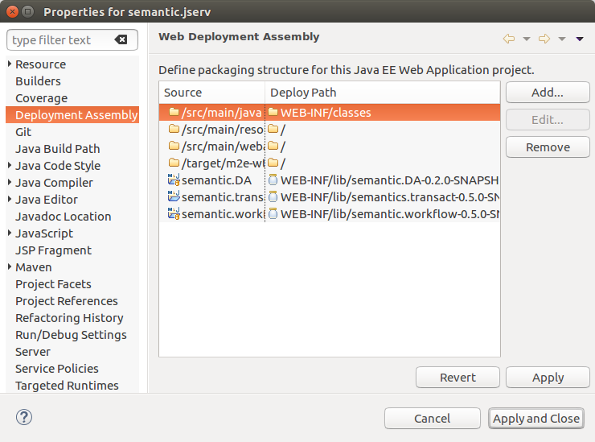
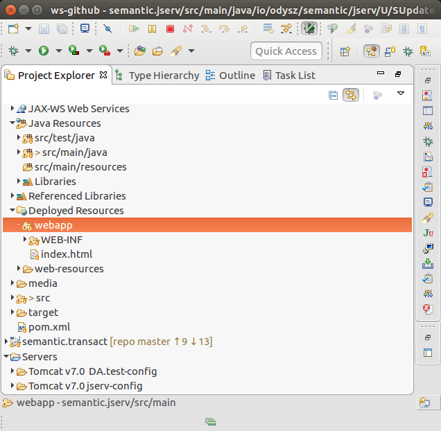
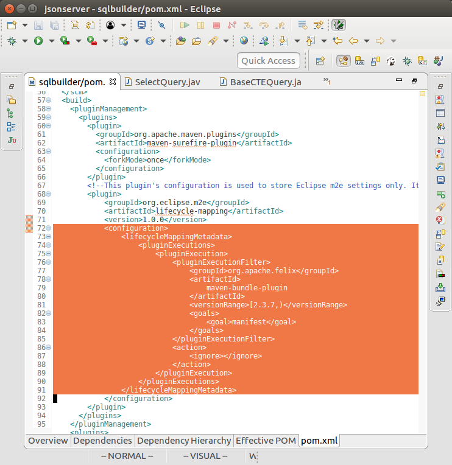
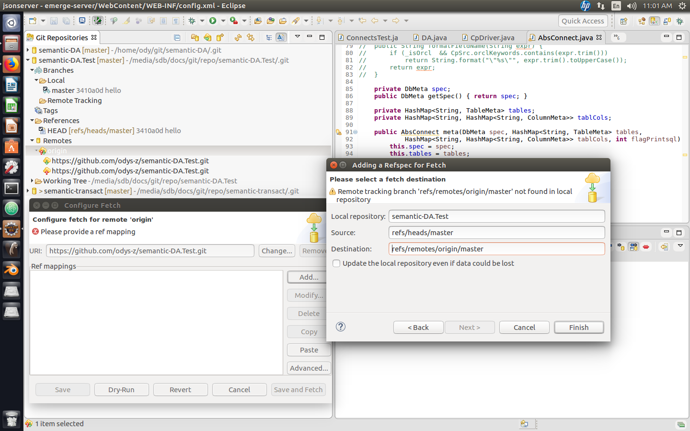
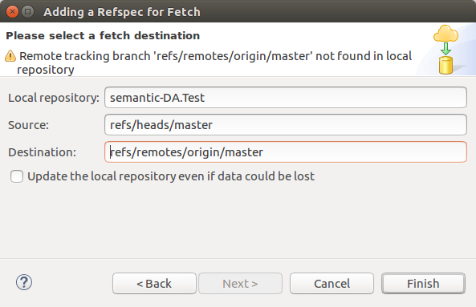
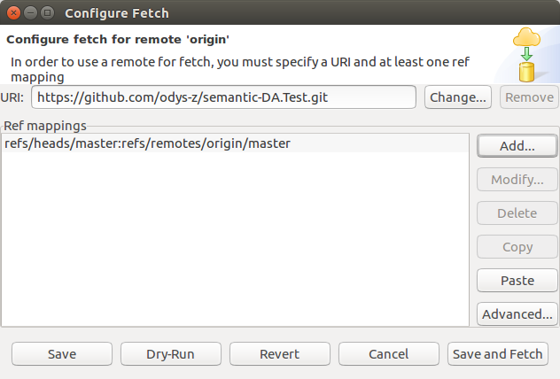
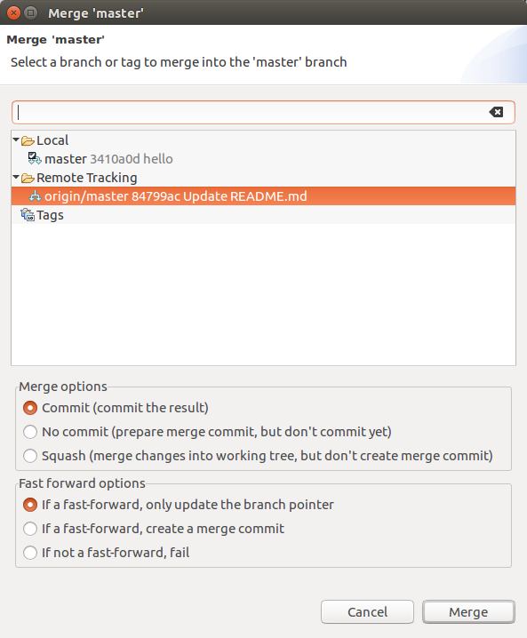
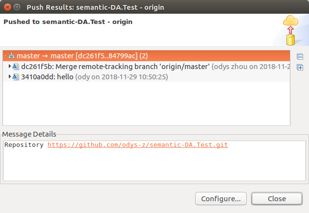
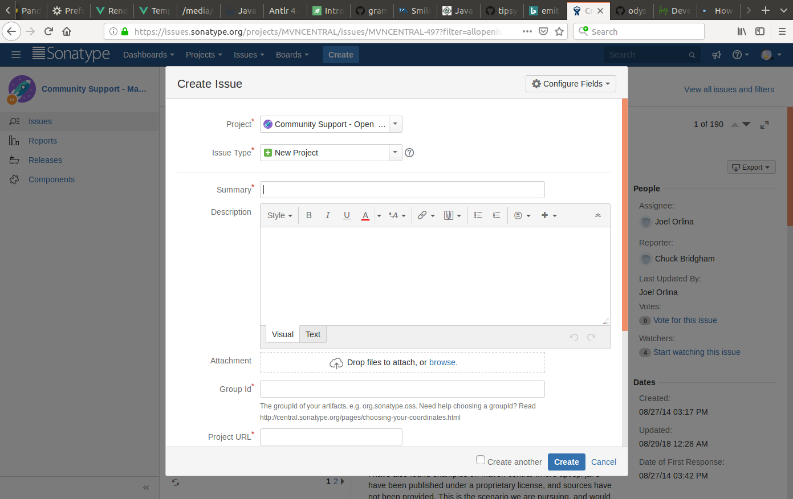
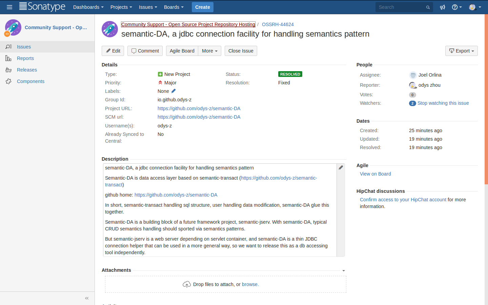

| trouble | shootings | |
|---|---|---|
| m2e | ||
| jserv-sample depending on semantic.jserv.jar but deployed classes into WEB-INF/classes
ClassNotFoundException:io.odysz.semantic.jserv.JSingleton
|
This is because jserv-sample denpending directly to the eclipse project semantic.jserv and
unfortunately the semantic.jserv has some incorrect project settings in Deployment Assembly. see Seth Ellison's Answer of His Question  |
|
Eclipse can not resolve type from maven denpendency, but mvn works perfectly. |
Cause: The referenced type is comments out in dependee project, but the folder is there. Another type in another maven dependee project provide the same package and class. This makes eclipse failed to resolve type. Another similar case is commented out the same pakage.class from the project and referencing a maven depended class. See the left error. Solution Delete the deprecated package in the 1st dependee, install and clean, update maven projects. |
|
| Maven project can't deploy to tomcat | Error: Tomcat return 404 to browser for http://127.0.0.1:8080/semantic.jserv/query.serv
When checking project in eclipse, there is no 'webapp' folder to deploy. Solution: Clean and reconvert to maven project:
mvn eclipse:clean eclipse:eclipse
redeploy tomcat server.right clicke project - configure - convert to maven project right clicke project - maven - update project mvn package See Updating .settings/org.eclipse.wst.common.component file in a maven project Ask Question |
|
| New Maven project can't update | Description Resource Path Location Type Could not calculate build plan:
Failure to transfer org.apache.maven.plugins:... from http://repo1.maven.org/maven2 ...
This is a connection error. Check proxy settings for Maven.To change proxy, ~/.m2/settings.xml
<settings> <proxies>
Then check in CLI to verify maven is working.<proxy> <id>example-proxy</id> <active>true</active> <protocol>http</protocol> <host>proxy.example.com</host> <port>8080</port> <username>proxyuser</username> <password>somepassword</password> <nonProxyHosts>www.google.com|*.example.com</nonProxyHosts> </proxy> ... </proxies> </settings> If the problem persists in Eclipse, use force update: Maven > Update Project > chek Force Update of Snapshots/Releases
See Maven proxy settings – Eclipse, command line and global settings
|
|
| Mavan web app depends on another web app
java.ClassNotFoundException: class.from.denendency |
Add maven overlay plugin to denpendee. Export a jar to depending lib See jserv-sample troubleshootings |
|
| SqlBuilder can not compile | 1. After imorted from GitHub, right clikck project
Configure > convert to maven project
2. Update maven project.
In Problem view: Plugin execution not covered by lifecycle configuration
Ignore the pom error (Suggested by Eclipse): For details, see stackoverflow. |
|
| GIT / EGIG | ||
| EGit won't push | Egit rejected non-fast-forward
Follow Robert Bender's answer
In short, you need: 1. add remote 2. add source to fetch 3. merge fetched with local branch 4. push      |
|
| Deploy / Release | ||
| Tutorial Resources | To do excactly the deloy and release,
Follow
How to Publish Your Artifacts to Maven Central. This video by niklas is also helpful. The official video -First Deployments - Easy Publishing to Central Repository is also helpful. Make sure it's project of "Community Support - Open Source Project Repository Hosting (OSSRH)" Using groupId with 'io.github' is suggested as it's can be as quick as in minuts.   Tip 1: To deploy to maven repository, a CLI is necessary. sudo apt-get install maven Tip 2: Server Id must consists. Check the Examples. pom.xml example .m2/settings.xml example Tip 3: SNAPSHOT can be published and dependended on by others. The above example is enough to publish a dependable snapshot. Use this to depend on a snapshot: <repositories> <repository> <id>sonatype-snapshots</id> <url>https://oss.sonatype.org/content/repositories/snapshots</url> </repository> </repositories> <dependency> <!-- As sonatype SNAPSHOT is updating on a daily base, you may update this with: mvn clean package -U to update immediately. --> <groupId>io.github.odys-z</groupId> <artifactId>semantics.transact</artifactId> <version>0.0.1-SNAPSHOT</version> </dependency> |
|
| Deploy Maven SNAPSHOT Failed | Deploy failed on another host.
[INFO] ------------------------------------------------------------------------ [INFO] BUILD FAILURE [INFO] ------------------------------------------------------------------------ [INFO] Total time: 23.436 s [INFO] Finished at: 2019-01-01T15:00:20+08:00 [INFO] Final Memory: 31M/365M [INFO] ------------------------------------------------------------------------ [ERROR] Failed to execute goal org.sonatype.plugins:nexus-staging-maven-plugin: 1.6.7:deploy (injected-nexus-deploy) on project semantics.transact: Failed to d eploy artifacts: Could not transfer artifact io.github.odys-z:semantics.transac t:jar:javadoc:0.5.0-20190101.070018-5 from/to ossrh (https://oss.sonatype.org/c ontent/repositories/snapshots): Failed to transfer file: https://oss.sonatype.o rg/content/repositories/snapshots/io/github/odys-z/semantics.transact/0.5.0-SNA PSHOT/semantics.transact-0.5.0-20190101.070018-5-javadoc.jar. Return code is: 4 01, ReasonPhrase: Unauthorized. -> [Help 1] <settings> <servers> <server> <id>ossrh</id> <username>odys-z</username> <password>*************</password> <!-- other optional elements: <privateKey>/path/to/identity</privateKey> (default is ~/.ssh/id_dsa) <passphrase>my_key_passphrase</passphrase> --> </server> </servers> </settings> What to do when Nexus returns '401' |
|
| maven-surefire-plugin Failed | The above can be results from the correct step:
maven test / deploy ------------------------------------------------------- T E S T S ------------------------------------------------------- Error: Could not find or load main class org.apache.maven.surefire.booter.ForkedBooter Results : Tests run: 0, Failures: 0, Errors: 0, Skipped: 0 [INFO] ------------------------------------------------------------------------ [INFO] BUILD FAILURE [INFO] ------------------------------------------------------------------------ [INFO] Total time: 1.086 s [INFO] Finished at: 2018-11-27T15:58:41+08:00 [INFO] Final Memory: 17M/378M [INFO] ------------------------------------------------------------------------ [ERROR] Failed to execute goal org.apache.maven.plugins:maven-surefire-plugin:2. 17:test (default-test) on project semantics.transact: Execution default-test of goal org.apache.maven.plugins:maven-surefire-plugin:2.17:test failed: The forked VM terminated without properly saying goodbye. VM crash or System.exit called? [ERROR] Command was /bin/sh -c cd /media/sdb/docs/git/repo/semantic-transact/sem antic.transact && /usr/lib/jvm/java-8-openjdk-amd64/jre/bin/java -jar /media/sdb /docs/git/repo/semantic-transact/semantic.transact/target/surefire/surefireboote r2579853082995400329.jar /media/sdb/docs/git/repo/semantic-transact/semantic.tra nsact/target/surefire/surefire5313879494273966955tmp /media/sdb/docs/git/repo/se mantic-transact/semantic.transact/target/surefire/surefire_08020210402550410574tmp [ERROR] -> [Help 1] .m2/settings.xml:
<profile>
<id>SUREFIRE-1588</id>
<activation>
<activeByDefault>true</activeByDefault>
</activation>
<properties>
<argLine>-Djdk.net.URLClassPath.disableClassPathURLCheck=true</argLine>
</properties>
</profile> |
|